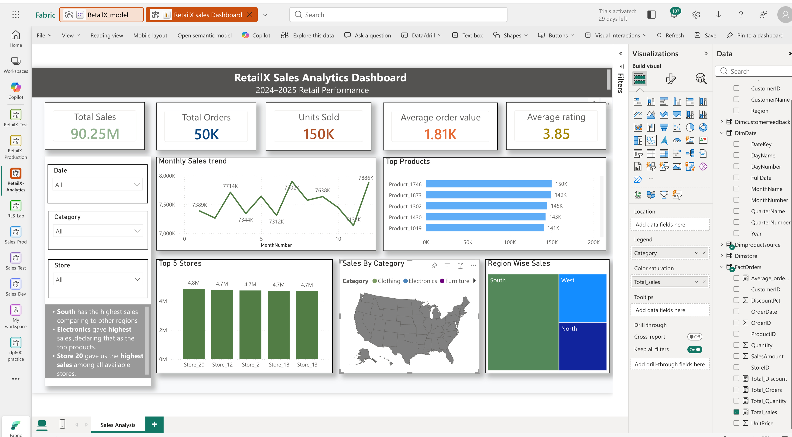
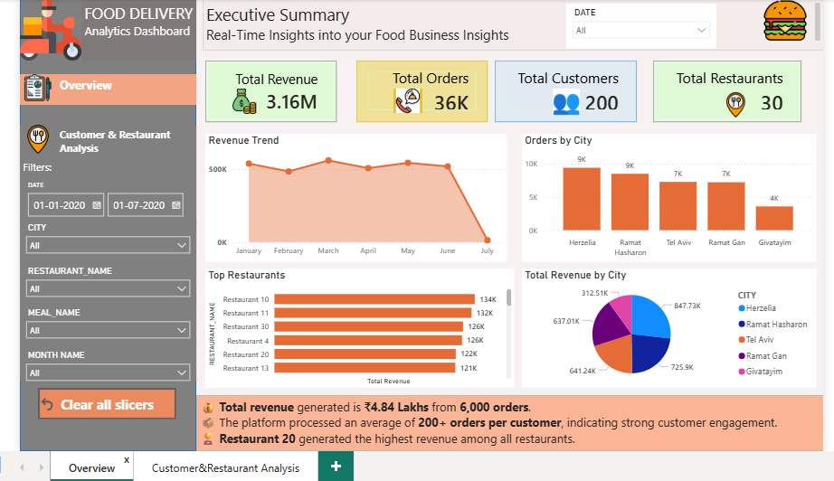
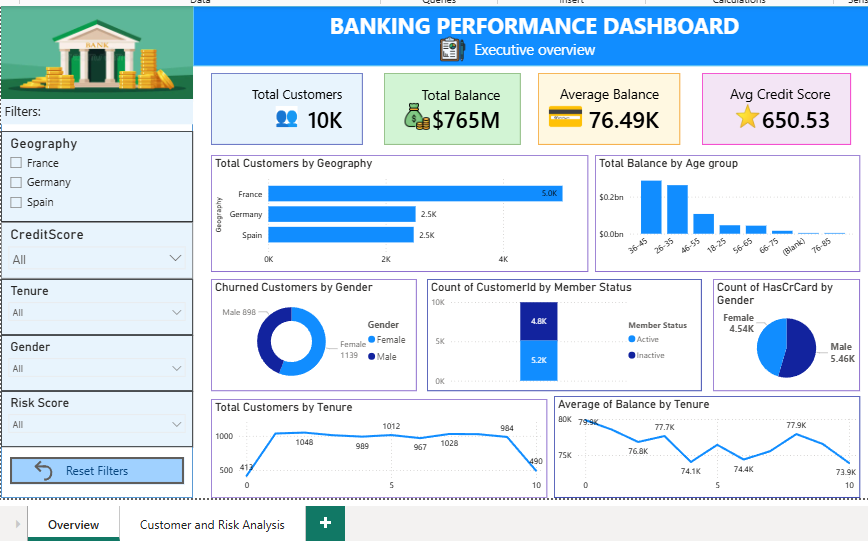
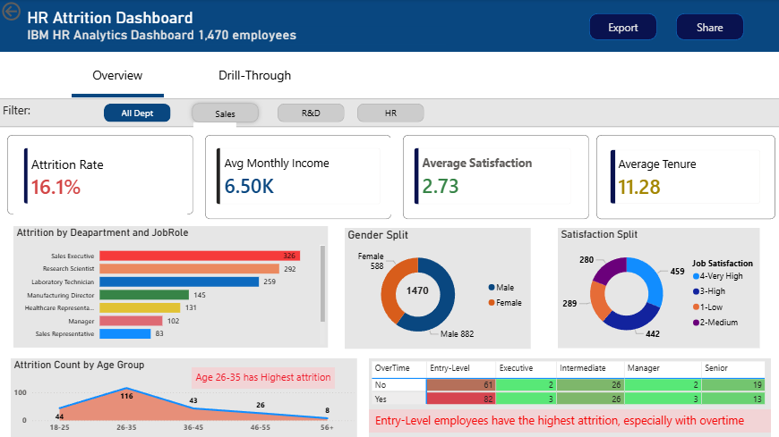

👋 Hello, I'm
Passionate Data Analyst with expertise in SQL, Power BI, Snowflake, Tableau, Python, and Excel. I transform raw data into interactive dashboards and actionable business insights.
Passionate about transforming data into meaningful business insights.
I'm Jayasree M, an aspiring Data Analyst with hands-on experience in SQL, Power BI, Tableau, Snowflake, Python, and Excel. I enjoy uncovering patterns in data and building interactive dashboards that support informed business decisions.
I specialize in data cleaning, business intelligence, dashboard development, KPI reporting, SQL analysis, and transforming complex datasets into actionable insights across Food Delivery, Banking, and HR Analytics domains.
My goal is to begin my career as a Data Analyst, leveraging analytical thinking and business intelligence to help organizations make data-driven decisions.
Technologies and tools I use to transform data into actionable business insights.
A collection of end-to-end data analytics projects demonstrating business intelligence, dashboard development, and data storytelling.

Built an end-to-end retail analytics solution using Microsoft Fabric and Power BI to analyze 50,000 retail orders across 2024–2025. The project follows a Bronze → Silver → Gold Lakehouse architecture and includes data transformation, semantic modeling, DAX, security, and deployment workflows.

Built an end-to-end business intelligence solution to analyze customer behavior, restaurant performance, delivery efficiency, and revenue trends.

Developed an executive dashboard to identify churn patterns, customer segmentation, and retention opportunities.

Designed an HR analytics dashboard to understand workforce trends, employee attrition, and organizational performance.
Industry-recognized certifications validating my skills in Data Analytics, SQL, Python, Business Intelligence and Database Management.
IBM
IBM
HackerRank
Scalar
Udemy
Hands-on virtual experiences and industry-focused learning that strengthened my practical data analytics skills.
Forage | June 2026
Milestones that demonstrate my continuous learning and commitment to data analytics.
Designed and developed interactive Power BI dashboards covering Food Delivery, Banking, and HR Analytics.
Earned certifications from IBM, HackerRank, Scalar, and Udemy in SQL, Python, and Databases.
Completed a practical Data Analytics Job Simulation through Forage using Tableau and Excel.
I'm actively seeking Data Analyst opportunities and would love to connect with recruiters and professionals.
Chennai, Tamil Nadu, India